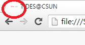

I have updated the favicon with the latest logo, however, because the new version of the logo is horizontally set, the text within the logo is not visible 
As you wanted a three sub-options, I have renamed the main option from "Programming Modules" to "Modules" as the name "Programming Modules" was mentioned as one of the suboption. Do you still want me to keep it as "Programming Modules".
I have removed the blur and reduced the size of the image on the homepage, do you want any further changes on the image size?
You said to include the "Related web resources" as one of the sub option, so I created a new page for it and removed it from the "Programming Modules" and "Visual Modules".
I don't have access to the ECS server to get all the required files and to upload the new deisgn to it.
In one of your email you said to include the "News" in the homepage but in the other email referring to the point on "readme" page you just said "OK" on the question of whether you want it on the homepage or not. Just to clarify, do you want to include the "News" in the homepage or it is okay the way it is in the new design.
As the spacing between the items within the "News" section was too much I have reduced the spacings. However, while making this change I thought about a new way to design those items. To get your opinion on what to follow I have designed half of the items with one style and the other half with reduces spacings. Which one should I use?
In your first email you said to remove the news item regarding website launch and add a new item for the website launch. Can you tell me what should I add in this new item?